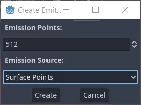
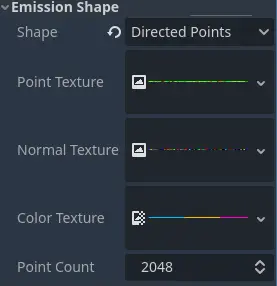

Hình dạng phát xạ phức tạp

Khi việc phát hạt từ một trong các hình dạng đơn giản có sẵn trong process material là chưa đủ, Godot cung cấp cách phát hạt từ các hình dạng phức tạp tùy ý. Các hình dạng được tạo từ mesh trong scene và được lưu dưới dạng texture trong particle process material. Đây là một quy trình rất linh hoạt, cho phép người dùng dùng hệ thống hạt cho những việc vượt ra ngoài cách dùng truyền thống, như tán lá, lá trên cây hay các hiệu ứng hologram phức tạp.
Ghi chú
Khi tạo các điểm phát từ mesh, bạn chỉ có thể chọn một node duy nhất làm nguồn phát. Nếu muốn hạt phát ra từ nhiều hình dạng, bạn phải tạo nhiều hệ thống hạt hoặc gộp các mesh thành một trong phần mềm DCC bên ngoài.

Tạo các điểm phát hạt...

...từ một mesh instance làm nguồn

Nhiều điểm hơn = mật độ hạt cao hơn
Để dùng tính năng này, hãy bắt đầu bằng việc tạo một hệ thống hạt trong scene hiện tại. Thêm một mesh instance làm nguồn cho các điểm phát hạt. Khi đang chọn hệ thống hạt, hãy vào menu của viewport và chọn mục GPUParticles3D. Từ đó, chọn Create Emission Points From Node.
Một hộp thoại sẽ hiện lên và yêu cầu bạn chọn một node làm nguồn phát. Hãy chọn một trong các mesh instance trong scene và xác nhận lựa chọn. Hộp thoại tiếp theo liên quan đến số lượng điểm và cách tạo chúng.
Emission Points điều khiển tổng số điểm mà bạn sắp tạo. Hạt sẽ sinh ra từ các điểm này, vì vậy giá trị cần nhập phụ thuộc vào kích thước của mesh nguồn (diện tích bạn cần phủ) và mật độ hạt mong muốn.
Emission Source cung cấp 3 tùy chọn khác nhau cho cách tạo điểm. Chọn Surface Points nếu bạn chỉ muốn phân bố các điểm phát trên bề mặt mesh. Chọn Surface Points + Normal (Directed) nếu bạn cũng muốn tạo thông tin về pháp tuyến bề mặt và khiến hạt di chuyển theo hướng mà pháp tuyến chỉ tới. Tùy chọn cuối cùng, Volume, tạo điểm phát ở khắp bên trong mesh chứ không chỉ trên bề mặt.
Các điểm phát được lưu trong hệ tọa độ cục bộ của hệ thống hạt, vì vậy bạn có thể di chuyển node hạt và các điểm phát sẽ đi theo. Điều này có thể hữu ích khi bạn muốn dùng cùng một hệ thống hạt ở nhiều nơi khác nhau. Mặt khác, bạn có thể phải tạo lại các điểm phát khi di chuyển hệ thống hạt hoặc mesh nguồn.
Texture hình dạng phát xạ

Các texture hình dạng phát có sẵn
Toàn bộ dữ liệu cho các hình dạng phát hạt phức tạp được lưu trong một tập texture. Số lượng texture phụ thuộc vào loại hình dạng phát mà bạn dùng. Nếu bạn đặt thuộc tính Shape trong nhóm Emission Shape của particle process material thành Points, bạn có 2 thuộc tính texture là Point Texture và Color Texture. Đặt thành Directed Points thì có thêm thuộc tính thứ ba tên là Normal Texture.
Point Texture chứa mọi điểm phát có thể có đã được tạo ở bước trước. Mỗi hạt khi sinh ra sẽ được chọn ngẫu nhiên một điểm. Normal Texture, nếu có, cung cấp một vector hướng tại cùng vị trí đó. Nếu thuộc tính Color Texture cũng được đặt, nó cung cấp màu cho hạt, được lấy mẫu tại cùng vị trí với hai texture kia và điều biến (modulate) mọi màu khác đã thiết lập trên process material.
Ngoài ra còn có thuộc tính Point Count mà bạn có thể dùng để thay đổi số điểm phát bất cứ lúc nào sau khi tạo hình dạng phát. Kể cả thay đổi động khi đang chạy game.